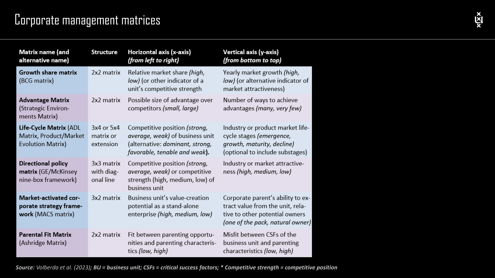

The framework
| Framework | Dimensions | Main use |
|---|---|---|
| Life-cycle / ADL matrix | Industry life-cycle stage × competitive position. | Connect development stage and strength to options such as expansion, holding, harvesting, turnaround or abandonment. |
| Directional policy / GE–McKinsey | Industry or market attractiveness × business competitive strength. | Discuss invest/grow, selective investment or earnings, and harvest/divest. |
| Advantage matrix | Size of potential competitive advantage × number of ways to achieve advantage. | Characterize the strategic environment. |
| MACS | Stand-alone value-creation potential × the parent's relative ability to extract value. | Ask whether this owner is well placed to realize the business's potential. |
| Parental fit / Ashridge | Fit of parenting opportunities and characteristics × misfit with critical success factors. | Examine whether the parent is helpful or potentially harmful. |
Key distinctions
Life-cycle decisions
The lecture's matrix separates emergence, growth, maturity and decline or stagnation, alongside strong, average and weak competitive positions. It shows that a business's stage and strength matter jointly; the same action is not appropriate everywhere in a column or row.
Directional policy decisions
Attractiveness and competitive strength can summarize several underlying criteria. The lecture's graphics also distinguish the size of a market and a business's share in it. Make the criteria and bubble encoding visible so that the graphic does not imply more precision than the inputs support.
From matrix to judgment
A useful allocation discussion includes the reasons for the scores, sensitivity to different assumptions, cash needs, capability gaps and portfolio interdependencies. A colored cell should make the discussion easier to inspect, not substitute for it.
How to use it
- Choose the matrix that answers the actual decision question.
- Define criteria, evidence and any weights before scoring.
- Explain the proposed action and its consequences for the rest of the portfolio.
Keep in mind
Matrix recommendations simplify a complex decision. Do not treat a position near a boundary as a sharp economic distinction.
How does MACS add a different question?
Reveal the explanation
It includes whether this corporate parent is a better owner, rather than considering only the business's own attractiveness.
Read the classroom original
Complete pages from the supplied lecture slides. Select a page to read, enlarge or browse its extracted text. Page numbers refer to the PDF’s physical page order.
